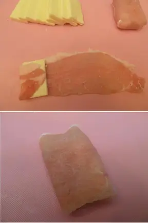

Ingredients (for 10 pieces)
・Thinly sliced pork loin 400g (20 pieces, each piece weighing around 20g)
・baby cheese 5 pieces
・salt and pepper a little
・flour 3/4 cup
・water 100cc
・beaten egg 1 piece
・bread crumbs Appropriate amount
・frying oil Appropriate amount
How to make it
1.Prepare thinly sliced meat for ginger grilling as shown in the image . Place the baby cheese upright and cut each piece into two pieces (wet the knife to cut without sticking)
2.Spread the meat out, place a piece of cheese on the narrow side and roll it up. Fold the protruding parts on both sides inward.

3.To prevent the cheese from melting, take another layer of the first one, turn it around, wrap the side toward you, trim the protruding part, and you're done!
4.Once you have rolled them all up in the same way, sprinkle salt and pepper on both sides.It's easy once you get used to it, and the work up to this point takes about 5 minutes.
5.For coating, use a simple batter.
6.In a bowl, mix flour, water, and beaten egg in order, then pass through step 4 to firmly press down on the breadcrumbs.
7.In a bowl, mix flour, water, and beaten egg in order, then pass through step 4 to firmly press down on the breadcrumbs.
☆Tips and Points☆
☆If you surround the cheese with the meat from the sides and lengthwise, you don't have to worry about it melting into the frying oil.
☆If you have time, instead of frying immediately after coating the cheese, cover it with plastic wrap and let it sit in the refrigerator for about 30 minutes. When eaten, the bread crumbs become moist and easy to fry.